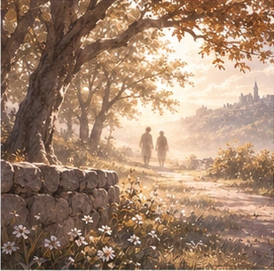
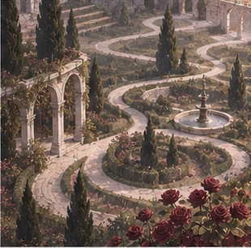
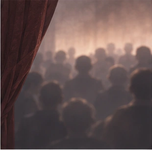

장면 01 / 28Zueignung헌시안개 속 흔들리는 형상괴테는 『파우스트』의 막을 올리기 전에, 이야기를 쓰는 시인의 목소리부터 들려준다. 이 첫 시를 ‘헌시’라고 부른다. 누군가에게 바치는 시라는 뜻이다. 시인이 젊은 날 시작했던 이야기를 다시 떠올리자, 안개 낀 언덕 아래에 사람들이 하나둘 모습을 드러내듯 오래된 얼굴들이 돌아왔다.독일어 원문 · 한국어 번역 펼치기Ihr naht euch wieder, schwankende Gestalten, Die früh sich einst dem trüben Blick gezeigt. 그대들이 다시 다가오는구나, 흔들리는 형상들이여, 일찍이 흐릿한 내 눈앞에 나타났던 그대들이여.붙잡으려는 손시인은 흐릿한 모습을 향해 손을 내밀 듯 마음을 기울였다. 이번에는 사라지기 전에 글로 옮기고 싶었다. 다만 처음 그들을 떠올렸을 때처럼 이 이야기에 빠질 수 있을지는 자신이 없었다.독일어 원문 · 한국어 번역 펼치기Versuch ich wohl, euch diesmal festzuhalten? Fühl ich mein Herz noch jenem Wahn geneigt? 이번에는 그대들을 붙잡아 보려 하는가? 내 마음은 아직도 그 옛 환상으로 기우는가?다가오는 기억한 사람의 얼굴을 알아보기도 전에 옆에서 또 다른 형체가 가까워졌다. 시인은 이제 그들이 어디로 이끄는지 따라가 보기로 했다.독일어 원문 · 한국어 번역 펼치기Ihr drängt euch zu! nun gut, so mögt ihr walten, Wie ihr aus Dunst und Nebel um mich steigt; 그대들이 밀려오는구나! 좋다, 마음껏 나를 지배하라, 연무와 안개 속에서 내 주위로 떠오르는 대로.젊은 마음을 흔드는 숨결얇은 옷자락을 흔드는 바람처럼 가벼운 기척이었다. 그런데도 가슴이 뛰었다. 한때 밤이 늦도록 그 사람들의 이야기를 생각하던 마음이 아직 남아 있었다.독일어 원문 · 한국어 번역 펼치기Mein Busen fühlt sich jugendlich erschüttert Vom Zauberhauch, der euren Zug umwittert. 그대들의 행렬을 감싸는 마법 같은 숨결에 내 가슴은 젊은 날처럼 떨리는구나.행복했던 날들형체들 뒤로 햇빛이 내려앉은 길이 떠올랐다. 이야기를 처음 쓰던 때에 즐거웠던 일들도 그들과 함께 돌아오고 있었다.독일어 원문 · 한국어 번역 펼치기Ihr bringt mit euch die Bilder froher Tage, Und manche liebe Schatten steigen auf; 그대들은 즐거웠던 날들의 모습을 데려오고, 정다운 그림자들도 여럿 떠오르는구나.첫사랑과 우정의 그림자빛 속에서 두 사람이 마주 보는 모습에, 시인은 처음 좋아했던 사람과 젊은 날의 친구들을 떠올렸다. 그들은 그가 글을 쓸 때 실제로 곁에 있던 사람들이었다. 기억 속에서라도 다시 만나니 그동안 흘러간 세월이 믿기지 않았다.독일어 원문 · 한국어 번역 펼치기Gleich einer alten, halbverklungnen Sage Kommt erste Lieb und Freundschaft mit herauf; 오래되어 반쯤 잊힌 전설처럼 첫사랑과 우정도 함께 되살아나는구나.미로 같은 삶의 길그들과 나눈 기쁨을 떠올리자, 함께 지내면서 겪었던 아픈 일들도 따라왔다. 굽은 정원길처럼 어디로 이어지는지 몰라 헤매던 때였다.독일어 원문 · 한국어 번역 펼치기Der Schmerz wird neu, es wiederholt die Klage Des Lebens labyrinthisch irren Lauf, 아픔은 새로워지고, 탄식은 되풀이하네, 미로처럼 헤매던 삶의 길을.떠나간 이들의 빈자리낙엽이 쌓인 벤치에는 이제 앉아 있는 사람이 없었다. 그때는 같이 보낼 날이 얼마든지 남은 줄 알았다. 돌아보니 짧게 스쳐 간 사람들이 많았다.독일어 원문 · 한국어 번역 펼치기Und nennt die Guten, die, um schöne Stunden Vom Glück getäuscht, vor mir hinweggeschwunden. 행복에 속아 아름다운 시간을 꿈꾸다가 나보다 먼저 사라진 좋은 이들의 이름을 부르네.사라진 첫 청중그중에는 시인이 글을 쓰면 곧장 읽어 주던 벗들이 있었다. 그들은 이 이야기의 첫 부분을 들었다. 나머지를 다 쓴다 해도, 시인은 그들에게 다시 모여 달라고 할 수 없었다.독일어 원문 · 한국어 번역 펼치기Sie hören nicht die folgenden Gesänge, Die Seelen, denen ich die ersten sang; 그들은 이어지는 이 노래를 듣지 못하리, 내가 처음 노래를 들려주었던 그 영혼들은.희미해진 메아리물 위의 잔물결이 먼 데서 잦아들듯, 글을 다 읽었을 때 돌아오던 웃음과 대답도 희미해졌다. 시인은 그 소리를 다시 듣고 싶었다.독일어 원문 · 한국어 번역 펼치기Zerstoben ist das freundliche Gedränge, Verklungen, ach! der erste Widerklang. 다정하게 모였던 무리는 흩어졌고, 아아, 첫 메아리도 사라졌구나.낯선 군중 앞의 노래붉은 막 너머로는 얼굴을 모르는 사람들의 객석이 펼쳐졌다. 앞으로 시인의 이야기를 들어 줄 이들이었다. 그들이 박수를 보낸다고 해도, 처음 이야기를 들어 주었던 친구들에게 그 소리를 들려줄 길은 없었다. 시인은 그 생각에 마음이 놓이지 않았다.독일어 원문 · 한국어 번역 펼치기Mein Lied ertönt der unbekannten Menge, Ihr Beifall selbst macht meinem Herzen bang, 내 노래는 낯선 군중에게 울려 퍼지고, 그들의 박수마저 내 마음을 불안하게 하네.세상에 흩어진 벗들옛 청중 모두가 세상을 떠난 것은 아니었다. 살아 있는 사람들도 안개 낀 언덕을 제각기 걷는 이들처럼 여기저기 흩어져 있었다.독일어 원문 · 한국어 번역 펼치기Und was sich sonst an meinem Lied erfreuet, Wenn es noch lebt, irrt in der Welt zerstreuet. 한때 내 노래를 기뻐했던 이들은, 아직 살아 있다면, 세상 곳곳에 흩어져 헤매리.고요한 영혼의 세계를 향한 그리움시인은 떠들썩한 객석을 생각하다가, 다시 안개 내린 숲길 같은 고요함을 그리워했다. 눈을 감고 조용히 있으면 헤어진 사람들과 잠시나마 같은 자리에 있는 듯했다.독일어 원문 · 한국어 번역 펼치기Und mich ergreift ein längst entwöhntes Sehnen Nach jenem stillen, ernsten Geisterreich, 그리고 오래 잊었던 그리움이 나를 사로잡네, 저 고요하고 엄숙한 영혼의 세계를 향한 그리움이.바람에 울리는 하프그때의 말을 읊는 그의 목소리도 작아졌다. 열린 창가의 하프는 손을 대지 않아도 바람이 지나가면 줄이 떨린다. 시인의 시도 어떤 기억이 닿느냐에 따라 가늘게 소리를 냈다.독일어 원문 · 한국어 번역 펼치기Es schwebet nun in unbestimmten Tönen Mein lispelnd Lied, der Äolsharfe gleich, 내 나직한 노래는 아직 정해지지 않은 음조로, 바람에 울리는 하프처럼 떠도네.눈물과 부드러워진 마음시인이 작게 몸을 떨었다. 눈물이 한 방울 흘렀고 그 뒤로 또 한 방울이 따라왔다. 이제야 그 사람들을 얼마나 보고 싶었는지 느낄 수 있었다.독일어 원문 · 한국어 번역 펼치기Ein Schauer faßt mich, Träne folgt den Tränen, Das strenge Herz, es fühlt sich mild und weich; 전율이 나를 붙들고, 눈물 뒤에 눈물이 흐르며, 굳었던 마음은 온화하고 부드러워지네.잃어버린 것이 현실이 되다눈앞의 의자와 탁자는 멀어지고, 저편의 햇빛 아래 두 사람이 걷는 모습이 가까워졌다. 잠시 동안은 오래전에 헤어진 사람들이 지금 곁에 있는 것만 같았다. 그렇게 다시 떠오른 이야기를 열어 보이기 위해, 다음 장에서는 극장의 세 사람이 무대를 준비한다.독일어 원문 · 한국어 번역 펼치기Was ich besitze, seh ich wie im Weiten, Und was verschwand, wird mir zu Wirklichkeiten.내가 지닌 것은 아득히 멀리 있는 듯 보이고, 사라진 것은 내게 현실이 되어 돌아오네.전체 목차다음 장면 →